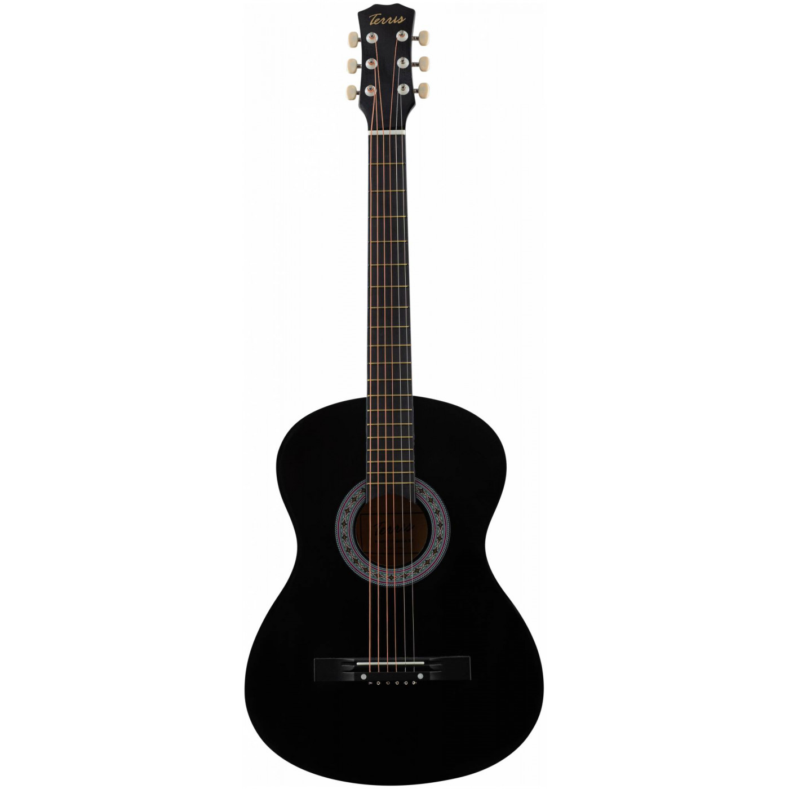

Это инструмент имеет стандартную для акустических гитар мензуру 651 мм и уменьшенный корпус. FLIGHT F230C отлично подойдет как начинающим гитаристам, так и в качестве второго инструмента для тех, кто уже умеет играть. Верхняя дека из ели придает инструменту яркое, звонкое, чёткое и ровное звучание. Нижняя дека и обечайка выполнены из агатиса, который обладает хорошими резонансными характеристиками. Гриф изготовлен из окоуме, подставка и накладка на гриф - кабукалли. Размер корпуса FLIGHT F230C немного меньше, чем у гитар с корпусом типа «дредноут» или «вестерн». Он ближе к размеру классической гитары, при этом на инструменте установлены металлические струны, которые дают такой любимый всеми яркий звук, а вырез внизу корпуса обеспечивает удобный доступ к верхним ладам. Два хромированных держателя позволят быстро и надежно закрепить ремень без использования дополнительного шнура. Двойное кольцо перламутрового цвета на розетке гармонично сочетается с перламутровой окантовкой на верхней деке. Инструмент выполнен в цвете санберст SunBurst и глянцевой отделке. Технические характеристики: Форма корпуса: фолк с вырезом Мензура: 651 мм Верхняя дека: ель Нижняя дека и обечайка: агатис Окантовка и розетка: абалон Гриф: окоуме Накладка на гриф и бридж: кабукалли Фурнитура: хром 2 держателя под ремень хромированного цвета Цвет: санберст Отделка: глянцевая
